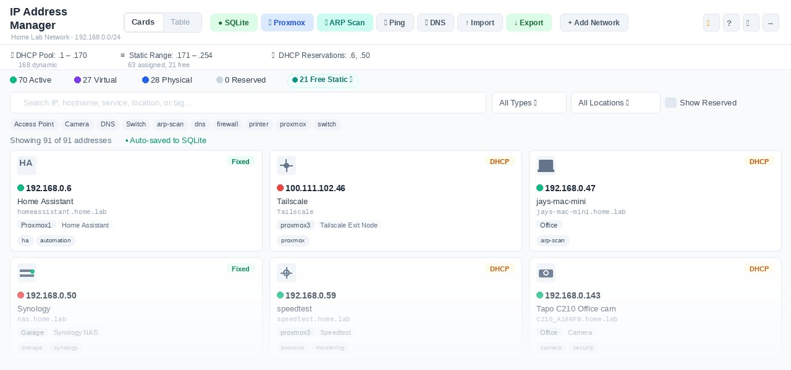
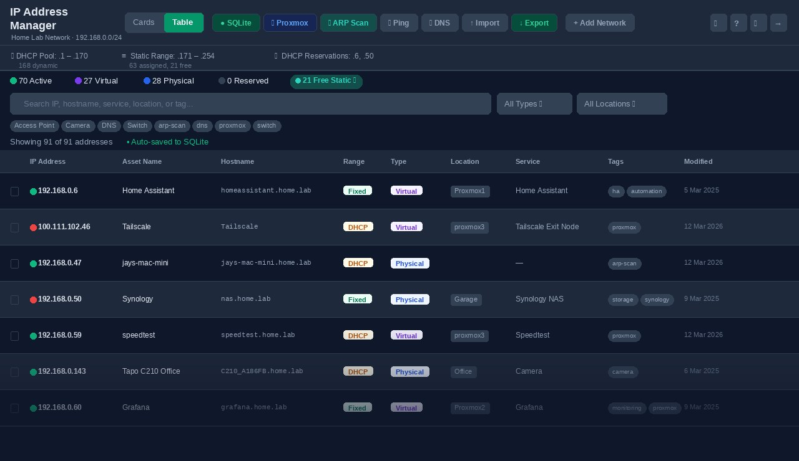

Replace your IP spreadsheet with a self-hosted dashboard for your home lab. Track addresses, services and domains, discover devices, trace dependencies, and see what needs attention — from one lightweight LXC container.


Find an address, investigate an outage, or plan a server restart. Keep your inventory, live status, device history and network relationships together.
Mark a device Under maintenance during planned work. It leaves the offline count and stops triggering offline alerts. Clear the flag when you are ready; the Maintenance filter reminds you when a flagged device responds again.
Show only devices that are not responding, with a live count and your existing type, location and tag filters. Free, reserved, unknown and maintenance entries stay out of the fault list.
See recorded dependencies and Proxmox guest-to-host relationships in Tools → Topology. Select a device to trace what depends on it before a restart. Optional gateway links add subnet context.
Expand an IP card to see when the device last responded, its outage count over the last 30 days, and a timeline of status transitions. Investigate intermittent failures without guessing.
Discover names and advertised services from compatible Apple devices, Chromecasts, printers, NAS boxes and more. Review suggestions to fill blank names without replacing your own labels. Multicast normally stays within a subnet.
Enable an optional view of device identities seen on your network. Review unrecognised devices and add them through a pre-filled edit form. Randomised MAC addresses are excluded from the unrecognised count. Observation only: this feature does not send alerts.
See manufacturer and virtualisation-platform badges, including Proxmox, QEMU/KVM and Hyper-V, plus duplicate ARP reply indicators. Optional Pi-hole DHCP names help identify devices when Pi-hole is your DHCP server.
Send device-offline, service-health, domain-expiry and backup-failure alerts to ntfy or a webhook. Consecutive-failure thresholds reduce transient ping alerts. Review the latest 500 activity events, including sign-ins and inventory changes.
Give each script or client a named read-only or read/write key that you can revoke independently. Edit individual entries with conflict detection and discover supported capabilities. Account administration remains session-only. See the API reference for endpoint access.
Bring device counts, reachability, service health and domain expiry into your Home Assistant dashboard. Generate a configuration snippet in Settings and use a dedicated API key. Maintenance status is included.
Less to download on first load: heavier tools and dialogs load when needed. After an update, see a short summary of changes, revisit it in Settings → Updates, or switch those summaries off.
The server checks tracked IPs with fping every 60 seconds. Reachability dots show which devices respond, while maintenance status distinguishes planned downtime from faults.
Opt-in HTTP/HTTPS probe per entry. A sky-blue dot means the service is responding; orange means it's down. Ports are auto-suggested for 60+ common services. Self-signed TLS certs are handled gracefully.
Track registrations alongside your IP entries. RDAP lookups fetch registrar, expiry and nameserver details where the registry provides them, with colour-coded expiry badges and daily refresh. No lookup API key required.
One-click subnet sweep finds every device on your network — even the ones you forgot about. Cross-references against existing entries and pre-selects new ones for easy import.
Import all your VMs and LXC containers directly from the Proxmox API. Scheduled background sync catches HA failovers and updates node locations automatically.
Resolves PTR records for every IP against your own DNS server (Pi-hole, Unbound, or any resolver). Each network has its own configurable resolver. Flags mismatches so you can spot stale records fast.
Got a server on two VLANs? Link all its IPs together. Primary cards show secondary chips; secondary cards show a back-link. Proxmox multi-NIC VMs group automatically.
Manage every subnet independently — /24s, /16s, management VLANs, IoT segments. Switch between networks instantly from the top bar.
Cards automatically display the real logo for 500+ self-hosted services — Home Assistant, Proxmox, Sonarr, Pi-hole, Vaultwarden, Nextcloud, and many more — via the selfh.st icon library. Assign any icon to any entry from the full searchable picker.
Migrate from an existing spreadsheet in seconds. CSV and Excel import with merge or replace modes, intelligent column mapping, and validation. Export to formatted .xlsx at any time.
Download a JSON backup of your inventory, networks, tags and change history, then restore it on another installation. Network Watch’s observation ledger is deliberately excluded from backups.
Generate a QR code for any IP entry — useful for sharing WiFi credentials, service URLs, or quickly connecting a phone to a local service without typing an IP address.
Built-in tools for calculating subnets, broadcast addresses, host ranges, and CIDR notation — right inside the app without switching to an external tool.
Fresh installs generate a unique password, stored as a bcrypt hash. Login throttling and expiring sessions protect browser access. Optional two-factor authentication adds an authenticator code and ten recovery codes; API clients keep using their own keys.
/ to search, Esc to clear/close, t/c to switch views. Mobile-friendly — toolbar collapses to a compact Tools dropdown on narrow screens.
Deploy to your own LXC container, configure your networks, and start building your inventory. Core data stays in local SQLite; enable external integrations only where you need them.
Create an Ubuntu 24.04 LXC on Proxmox, SSH in, and run the one-line install script. It sets up Node.js, Nginx, and the app automatically. A single LXC with 512 MB RAM is all you need — all data lives in a local SQLite database with no external services required. The installer prints your unique auto-generated credentials at the end; no passwords to choose upfront.
Open Settings and tell the app your subnet prefix, DHCP pool range, and static range. The live preview shows the calculated CIDR before you save. Add as many networks and VLANs as you need. Each network gets its own DNS resolver setting.
Import a CSV or Excel sheet, scan for reachable devices, or pull guests from Proxmox. Use mDNS to suggest missing names, and optionally enable Network Watch in Settings. Add tags, dependency links and service health checks as you go.
Monitor reachability and service health, filter offline devices, and investigate status history or topology. Configure ntfy or webhook alerts if wanted. Mark planned work as maintenance, and use scheduled Proxmox sync and domain refresh to keep records current.
Connect the tools already running in your lab, with optional integrations for discovery, automation and alerts.
When Pi-hole v6 is your DHCP server, Network Watch can use lease hostnames as a fallback. Configure its address and application password, then test the connection. Leave this off if your router handles DHCP.
Connect dashboards, scripts and compatible clients using named, scoped keys. Read device and domain status, or use a write-enabled key for supported inventory operations. Browse the API reference.
Choose which operational events to send to your notification service, test delivery, and set the offline threshold. These alerts cover tracked devices and services; Network Watch itself remains observation-only.
Ask compatible devices for their advertised names and services. Review inventory matches before applying suggestions; discovery does not normally cross VLANs without additional network configuration.
One-shot import pulls every VM and LXC with their IPs, node location, and power state. Scheduled background sync detects HA failovers and updates your records automatically — no manual re-import ever needed.
Point IP Manager at any resolver — your Pi-hole, an Unbound instance, or even 8.8.8.8. PTR lookups run against that server per-network and mismatches show as amber warnings on every affected card.
Sweep a local subnet for responding devices and review new addresses for import. Discovery depends on network reachability and available scan tools; failures and fallback warnings help explain an empty result.
Already tracking IPs in a spreadsheet? Import it directly — IP Manager maps your columns intelligently. Choose merge mode to layer new data on top of existing entries, or replace to start fresh.
IANA bootstrap data directs lookups to the appropriate RDAP registry. No API key is needed; available fields, domain coverage and rate limits depend on the registry.
Service icons are pulled from the community-maintained selfh.st library — 500+ logos for popular self-hosted apps, with dark-mode variants and automatic Lucide fallback for anything not in the library.
IP Manager is under continuous development — new features, fixes, and improvements ship regularly. Every release is a real improvement, shipped when it's ready rather than on a fixed schedule.
Take a device out of offline counts and alerts while you work on it. An amber maintenance status keeps planned downtime visible, and a reminder appears when it responds again. You choose when to clear the flag.
View release notesA Node.js server and local SQLite database, with an installer for an Ubuntu LXC behind Nginx. No hosted database or cloud subscription is required for core operation.
Installation, configuration, troubleshooting, and feature guides — all in the wiki.
Start with the installation guide. Run your inventory on your own hardware, with no cloud account required.